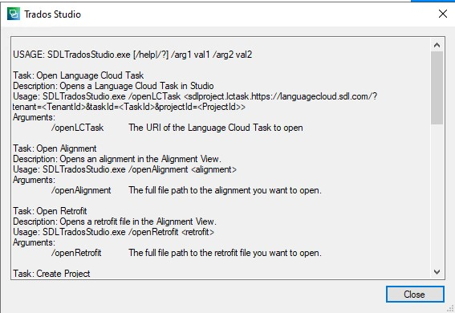

Trados Studio Command Line Processor
If you need to run Trados Studio from a command line and execute custom processing for a specific command with arguments, the Integration API enables you to create your own command line processor.
Creating a Command Line Argument Processor
To create a Trados Studio command line processor, follow these steps:
Implement either IExternalCommandLineProcessor or IExternalWindowAwareCommandLineProcessor, depending on whether you want the processor to run before or after the main screen displays.
Decorate your class with the ExternalCommandLineProcessorAttribute attribute from the
Sdl.Desktop.IntegrationApi.Extensions.CommandLinenamespace.
Requirements and Behavior
If you do not implement IExternalCommandLineProcessor or IExternalWindowAwareCommandLineProcessor, an exception is thrown. If you omit the ExternalCommandLineProcessorAttribute, your plug-in is ignored when Trados Studio starts.
Viewing Your Command in Help
After creating your command line processor, view the generated help by running the following command in cmd.exe:
C:\Program Files\Trados\Trados Studio\Studio19\SdlTradosStudio.exe ?
Your command appears, along with other available commands, in the resulting help screen:

Example
The following example demonstrates how to implement a custom command line processor.
The plugin implements the required interfaces mentioned above with the following key properties:
- TaskName — returns the name of the command processing unit
- TaskDescription — describes what that processing will do
- SupportedArguments — lists supported arguments
C#
using Sdl.Desktop.IntegrationApi.Extensions.CommandLine;
using System.Windows.Forms;
using System.Collections.Generic;
namespace Sdl.CustomPlugin.Packaging.OpenPackageWizard
{
[ExternalCommandLineProcessor(Id = "OpenPackageCommandLineProcessor_Id", Name = "OpenPackageCommandLineProcessor_Name", Description = "OpenPackageCommandLineProcessor_Description")]
public class OpenPackageCommandLineProcessor : IExternalWindowAwareCommandLineProcessor
{
private readonly IList<ExternalCommandLineArgumentDefinition> _supportedArguments;
private const string OpenPackageArgument = "openPackage";
public OpenPackageCommandLineProcessor()
{
_supportedArguments = new List<ExternalCommandLineArgumentDefinition>()
{
new ExternalCommandLineArgumentDefinition(OpenPackageArgument,
StringResources.OpenPackageCommandLineTask_Files)
{
MinValues = 1,
MaxValues = 1,
SampleValues = new[] { "package" }
}
};
}
public string TaskName => StringResources.OpenPackageCommandLineTask_Name;
public string TaskDescription => StringResources.OpenPackageCommandLineTask_Description;
public IEnumerable<ExternalCommandLineArgumentDefinition> SupportedArguments => _supportedArguments;
public void ProcessCommandLine(ExternalCommandLineArguments args)
{
ExternalCommandLineArgument packagesToOpen = args[OpenPackageArgument];
if (packagesToOpen == null)
{
return;
}
var uiPackageOpener = new UIPackageOpener(Form.ActiveForm);
uiPackageOpener.OpenPackage(packagesToOpen.Values[0]);
}
}
}